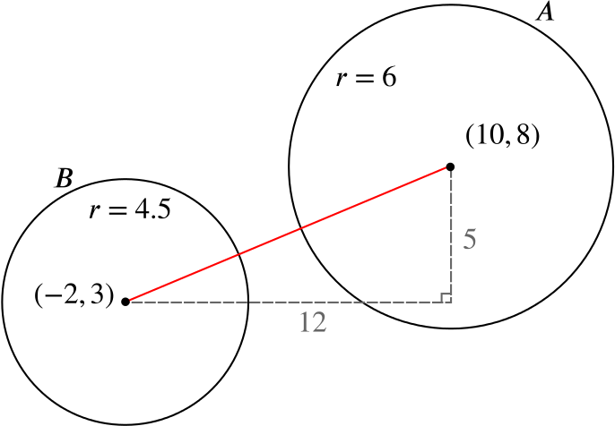

and so the distance between points (x,y) and (−g,−f) is g2+f2−c⎯⎯⎯⎯⎯⎯⎯⎯⎯⎯⎯⎯⎯⎯⎯⎯⎯⎯√. Therefore all points which satisfy this equation are the same distance away from (−g,−f), which shows they lie on a circle.
The circle has centre (−g,−f) and radius g2+f2−c⎯⎯⎯⎯⎯⎯⎯⎯⎯⎯⎯⎯⎯⎯⎯⎯⎯⎯√.
We have explained why the points satisfying
(x−a)2+(y−b)2=r2
lie on a circle with centre (a,b) and radius r; in this case, we had a=−g, b=−f and r=g2+f2−c⎯⎯⎯⎯⎯⎯⎯⎯⎯⎯⎯⎯⎯⎯⎯⎯⎯⎯√.
In the next part of the question we can use this to quickly identify the centres and radii of the circles.
Prove that the circles
x2+y2−20x−16y+128=0
and
4x2+4y2+16x−24y−29=0
lie entirely outside each other, and find the length of the shortest distance from a point on one circle to a point on the other.
Call the first circle A and the second circle B.
Circle A: Using the form of the first part, g=−10, f=−8, c=128. So A is a circle with centre (10,8) and radius (−10)2+(−8)2−128⎯⎯⎯⎯⎯⎯⎯⎯⎯⎯⎯⎯⎯⎯⎯⎯⎯⎯⎯⎯⎯⎯⎯⎯⎯⎯⎯⎯⎯⎯⎯⎯⎯⎯√=36⎯⎯⎯⎯√=6.
Circle B: Divide the equation by 4 to give
x2+y2+4x−6y−294=0
which is of the same form as the first part. Then g=2, f=−3, c=−294, so this is a circle with centre (−2,3) and radius 22+(−3)2+294⎯⎯⎯⎯⎯⎯⎯⎯⎯⎯⎯⎯⎯⎯⎯⎯⎯⎯⎯⎯⎯⎯⎯⎯⎯⎯√=814⎯⎯⎯⎯⎯√=92.
The distance between the circles’ centres is, by Pythagoras’ theorem,
but for there to be a point inside both circles, it would have to be a distance of less than 6 away from one centre and a distance of less than 92 from the other.
The sum of these distances, however, is only 10.5, less than the distance between the two centres themselves, so this cannot be.
So the circles lie entirely outside each other.
The points with the shortest distance between them are the points lying on the line joining the two centres.
To find the length of the shortest distance between the two circles consider the diagram below.

As calculated before, the length of the hypotenuse of the right-angled triangle in the diagram is 13.
Therefore the shortest distance between points on the two circles is 13−(6+92)=52.